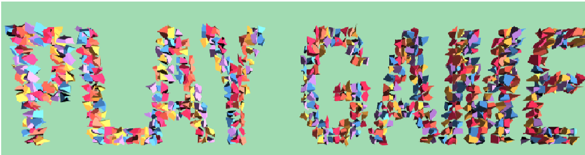

Port Folio
Programs
(current)

Previous
Next
得意なこと
課外活動
ライオンズ後援の気分は上々イベントスタッフとして参加しました。
Tedx saikai のイベントスタッフとして2018，19年の運営のお手伝いをしました。
概要
プログラミング
グラフィック
資格
C言語、C#、C++、Java、javascriptを学習しています。Open CVの勉強を現在は重点的に行っています。
作品は随時追加していきます
クリスタ、photoshop、Illastlaterを使って作品を作っています。
MAYA,Unityを使って3D作品を制作しました。
作品は随時追加していきます
ITパスポート、色彩検定UC級を持っています。
現在は基本情報技術者試験の勉強中です。
お問い合わせ
苗字
Looks good!
苗字を入力してください
名前
Looks good!
名前を入力してください
住所
Choose...
東京
大阪
福岡
長崎
同意する
同意するにチェックを入れてください
Submit form